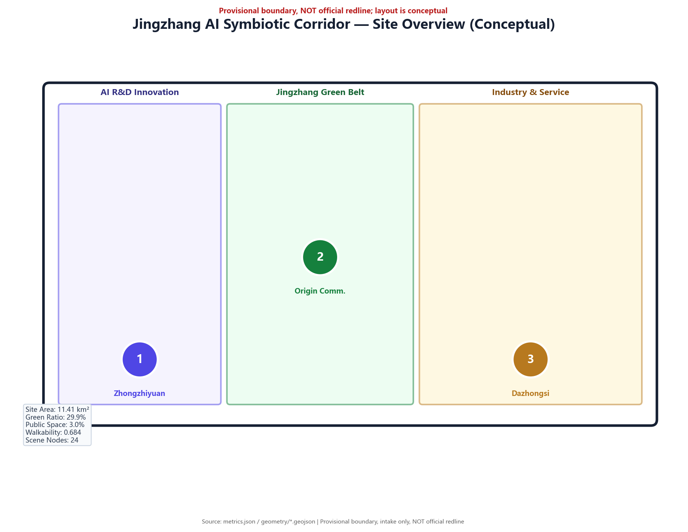
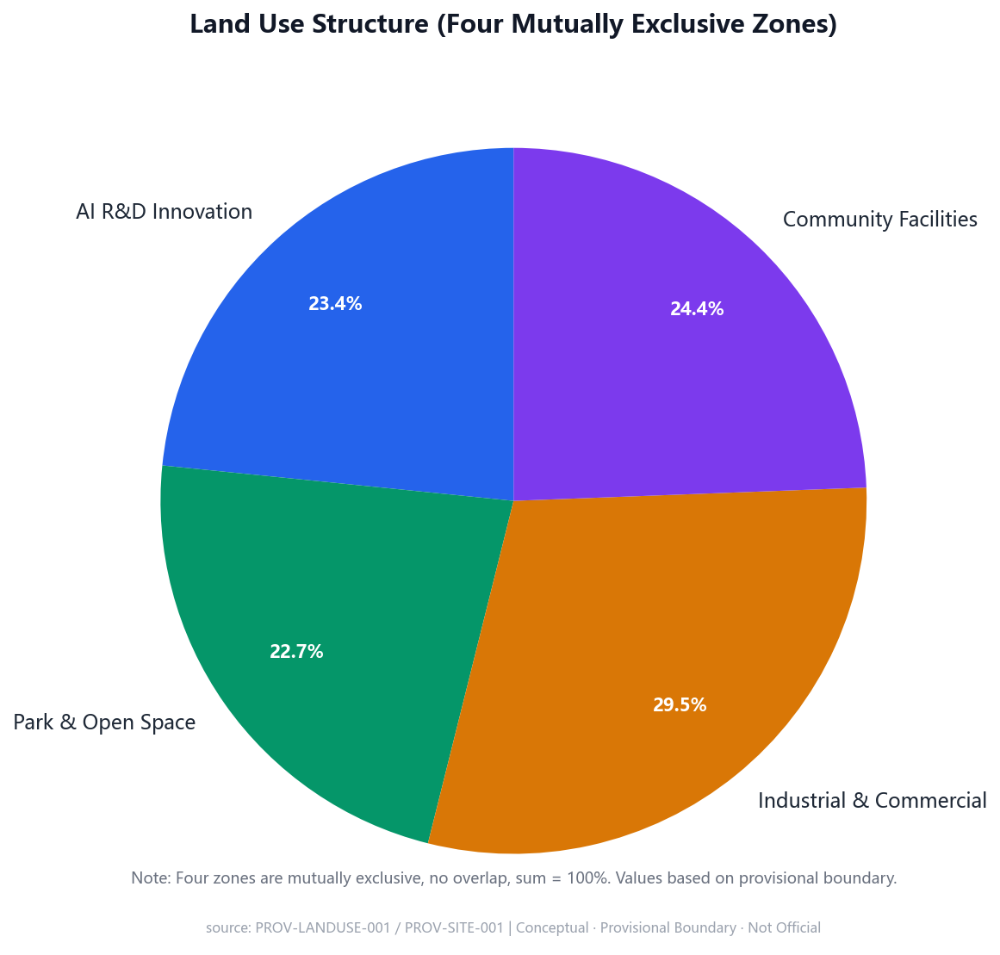
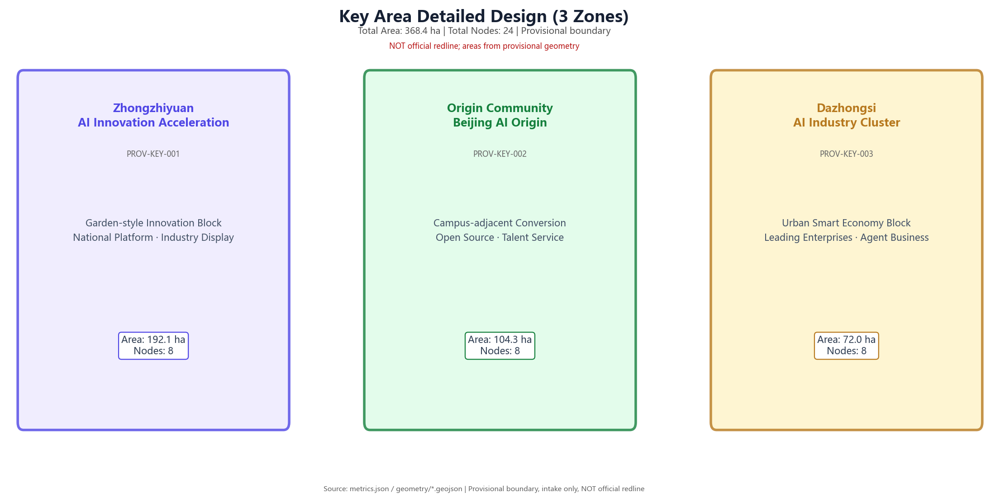
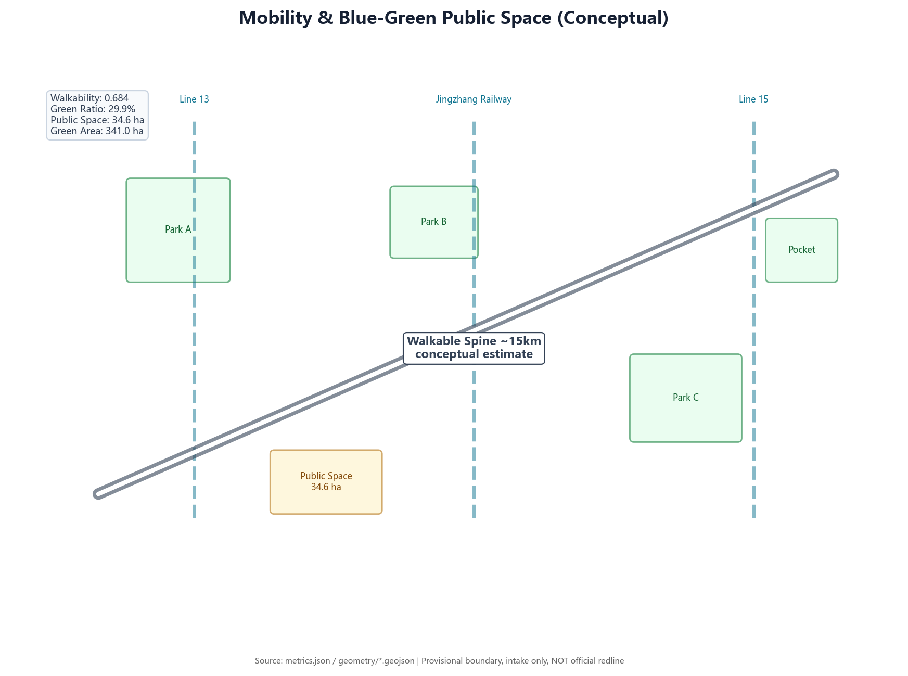
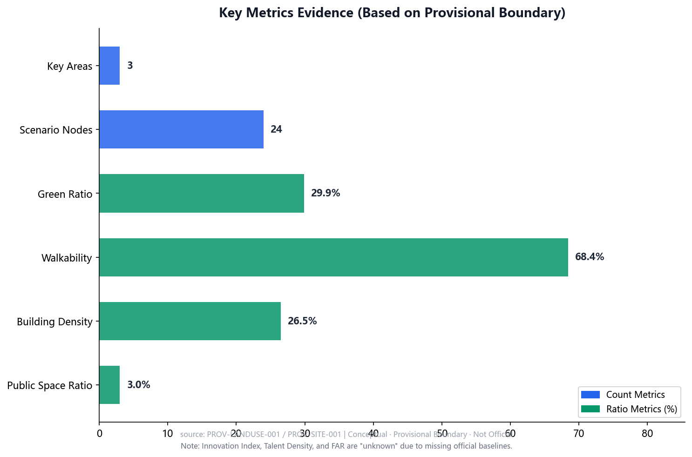
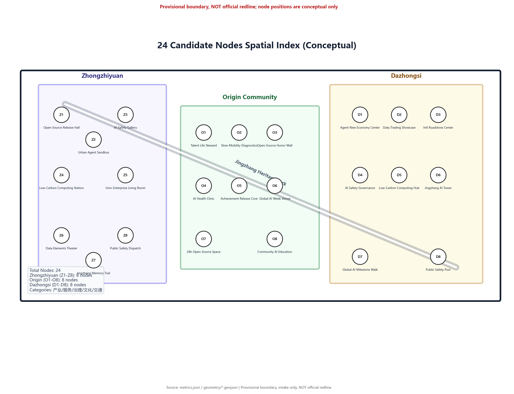

One Belt, Three Cores
Spatial Structure
Jingzhang Heritage Park Vitality Belt connects Zhongzhiyuan, Origin Community, and Dazhongsi; blue-green slow-travel composite loop links all functional zones.
This page is an offline electronic showcase that integrates the overview map, three-level scope, key areas, land-use zones, mobility and blue-green systems, AI scenario nodes, core metrics, and self-check status into a human-readable visual presentation. All displayed data is derived from GeoJSON, metrics.json, compliance matrices, and self-check results. Provisional geometry and estimated values are clearly marked.
The "Jingzhang AI Symbiotic Corridor" deeply integrates the century-old historical heritage of the Jingzhang Railway, the innovative DNA of Zhongguancun, and cutting-edge AI technology to build a world-class AI innovation ecosystem corridor featuring "one belt, three cores, multiple scenarios, and a full value chain."
Jingzhang Heritage Park Vitality Belt connects Zhongzhiyuan, Origin Community, and Dazhongsi; blue-green slow-travel composite loop links all functional zones.
Century-old railway industrial heritage → Zhongguancun innovation culture → AI civilization future, three-segment cultural narrative system.
Covering industrial development, urban services, and public governance — open-source release, safety governance, computing power waystations, and more.
Jingzhang AI Memorial Tower, Open-Source Contribution Honor Wall, and Global AI Milestone Corridor form a spiritual landmark system for global developers.
The following five core figures present the proposal's spatial structure, land-use layout, key areas, mobility and blue-green systems, and metrics evidence. All figures are offline local resources — no external CDN or remote service dependencies.






The schematic integrates land-use zones, mobility and slow-travel, blue-green public spaces, buildings and renewal projects, and AI scenario nodes into a single evidence map for quick reviewer comprehension of the spatial narrative.
The proposal progresses from the Coordinated Research Scope, to the Overall Design Scope, to the Key Area Scope — binding industrial judgment, urban renewal, and detailed district design to layers and metrics.
Proposes AI industry ecosystem, three-district-two-wing coordination, future urban form, and cultural narrative for 43.6 square kilometers.
Organizes urban renewal, land-use structure, transportation/municipal works, and Jingzhang Heritage Park Vitality Belt for 11.4 square kilometers.
Detailed design for three key districts, specifying functional programs, building renewal, public space, and transportation organization.
Each of the three key areas includes industry positioning, spatial strategy, building and public space actions, transportation interfaces, and implementation risk statements.
Garden-style autonomous innovation district. Highlights national platforms, industry showcase, Qinghe culture, external transportation, and low-carbon exchange spaces.
University-near achievement transformation district. Highlights university source innovation, open-source community, talent services, retain-renovate-demolish, and station integration.
Urban-type intelligent economy district. Highlights leading enterprises, agent新业态, commercial services, composite green space use, and four-quadrant intersection connectivity.
Scenarios are not slogans — they specify service targets, spatial locations, data sources, privacy boundaries, human review, and operating entities.
Achievement release and model evaluation node for developers, enterprises, and universities.
Testing transport, service, and operations agents in controllable public spaces.
Identifying heritage park slow-travel breakpoints using public data and human review.
Connecting housing, learning, consumption, sports, and social services.
Showcasing standard formulation, trustworthy evaluation, and safety governance capabilities.
Supporting achievement transfer reception and roadshows for Tsinghua, PKU, and CAS.
Data assets, intelligent terminals, and content consumption showcase in Dazhongsi district.
Explaining distributed energy, edge computing, and public service facility integration.
Connecting railway heritage, Zhongguancun innovation culture, and new AI culture.
Organizing developer festivals, scene open days, competition roadshows, and urban experience routes.
compliance_matrix.json covers announcements 1.3, 1.4, 1.5 and agent.1-agent.6; standard_matrix.json and design_depth_matrix.json demonstrate professional standards and achievement depth.
Sources are listed in sources.json, agent_taskbook.json, data/processed/agent_fact_pack.md, and standards/references. This page does not load CDN, remote map tiles, external scripts, external fonts, API requests, or iframes.
Missing regulatory plan, road redlines, ownership, municipal, cultural heritage, and engineering conditions must be specified in assumptions.json, with their impact on design conclusions explained in the main text.